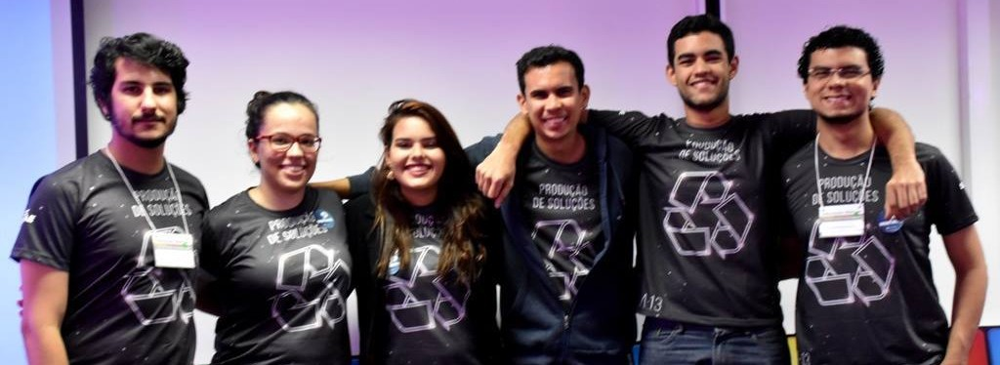

Polive
A Polive é uma startup que atua no gerenciamento de produção em indústrias do ramo têxtil. O produto principal era um sistema que conseguia avaliar as produtividade de cada funcionário individualmente, identificando fontes de atraso da linha de produção, colaboradores mais eficientes e tempo necessário para produzir uma única peça, por exemplo. Todas essas estatísticas já são obtidas atualmente, mas só com observação de engenheiros de produção. Com esse sistema torna-se possível automatizar o processo, tornando todos os dados fáceis de acessar e de analisar.
Essas estatísticas são tiradas a partir de um dispositivo na bancada de cada colaborador da linha de produção, que funciona assim: quando o trabalhador começa a fazer uma atividade na peça ele aperta o botão no dispositivo, indicando tal. Este então começa a contar o tempo gasto naquele processo, até que o trabalhador conclua e indique que terminou de trabalhar naquela peça. Assim o sistema pode perceber quantas ações aquele colaborador realizou, quanto tempo gastou em cada peça e até mesmo quanto tempo ele passou ocioso.
Com esses dados é possível mapear a linha de produção, identificando gargalos rapidamente e facilitando muito o trabalho dos gerentes.